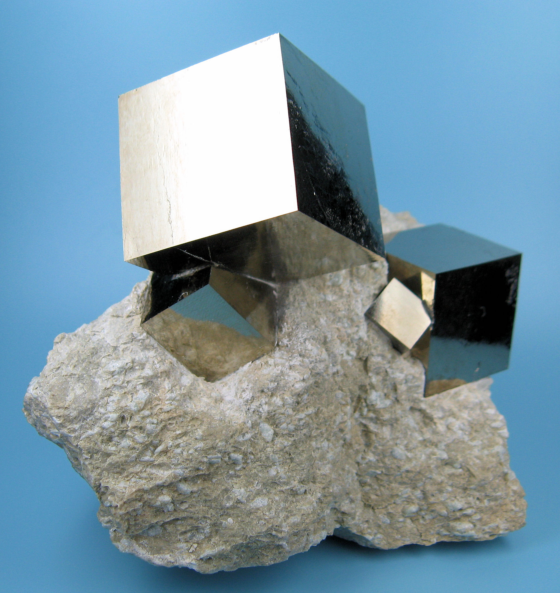
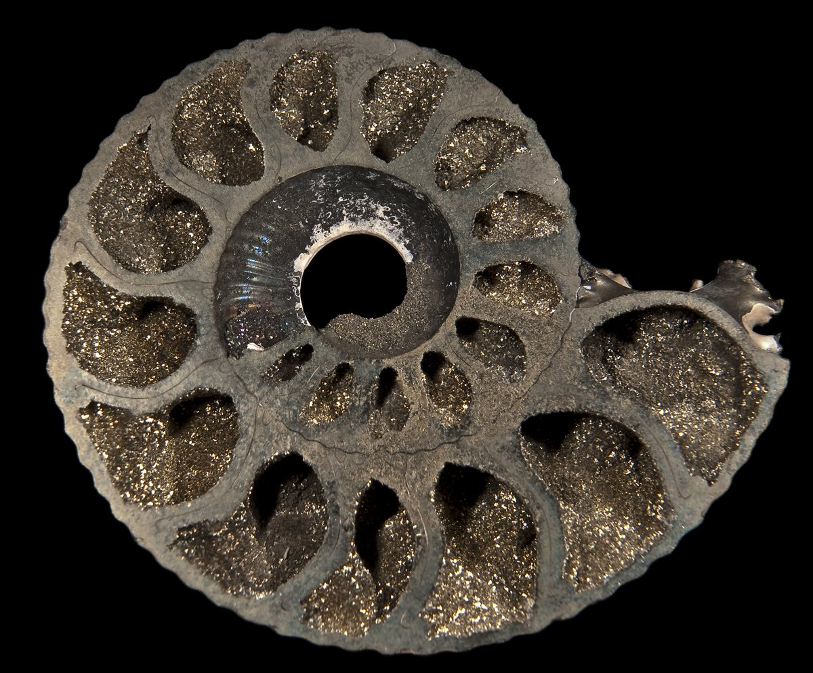

Piryt



Opis i historia
Piryt to disiarczek żelaza — jeden z najpospolitszych minerałów siarczkowych na Ziemi. Jego mosiężnożółty metaliczny połysk przez wieki wprowadzał w błąd poszukiwaczy złota, stąd angielska nazwa „Fool's Gold" (złoto głupców). Podczas gorączek złota w Ameryce i Australii tysiące ludzi przywoziło piryt myśląc, że wzbogacili się na złocie.
Piryt tworzy geometrycznie doskonałe kryształy — sześciany, pięciościany (pirytoedry) i dwunastościany — będące jednym z najpiękniejszych przykładów geometrii w przyrodzie. Złoże w Navajún (Hiszpania) dostarcza okazy o tak idealnych sześcianach, że przez lata uważano je za sztucznie wytworzone.
Nazwa pochodzi od greckiego pyr (πῦρ) — ogień. Piryt iskrzy przy uderzeniu stalą, co czyniło go jednym z pierwszych krzesiw w historii człowieka — używanym do wzniecania ognia przez setki tysięcy lat.
Gdzie występuje
- Hiszpania — Navajún (La Rioja); światowa stolica pirytu — kryształy o niemal matematycznie doskonałych sześcianach; Rio Tinto (Huelva) — ogromne złoże siarczkowe eksploatowane od epoki brązu
- Peru — Huanzala, Quiruvilca; błyszczące okazy kolekcjonerskie na matrycach kwarcowych
- Włochy — Elba (Toskania); historyczne złoże, piękne dwunastościany
- USA — Illinois, Colorado, Wirginia; masowe złoża przemysłowe
- Chiny — największy producent pirytu na świecie (przemysłowe)
- Rosja — Ural; okazy na matrycach chalkopirytu i kowelinu
- Polska — Góry Świętokrzyskie, Sudety; piryt jako składnik skał metamorficznych
Właściwości lecznicze i metafizyczne
Piryt jest kamieniem manifestacji, obfitości i woli działania. Jego słoneczny, metaliczny połysk symbolizuje energię słońca — ognia, siły i determinacji.
- Manifestacja i obfitość: jeden z najmocniejszych kamieni do przyciągania bogactwa, sukcesu i finansowej obfitości; talizman biznesmenów i przedsiębiorców
- Wola i determinacja: wzmacnia wolę działania, przełamuje inercję i odkłada-na-jutro; dodaje energii do realizacji planów
- Pewność siebie: wzmacnia poczucie własnej wartości i siłę przywódczą
- Ochrona przed wypaleniem: przy intensywnej pracy umysłowej chroni przed wypaleniem zawodowym
- Stymulacja intelektu: wyostrza pamięć, koncentrację i zdolności analityczne
- Zdrowie: tradycyjnie stosowany przy anemii (żelazo), chorobach układu kostnego i trawienia
Właściwości ochronne
- Tarcza wojownika: piryt tworzy energetyczną tarczę odbijającą negatywną energię z powrotem do jej źródła — dosłownie „lustra" wróg swoją własną negatywność
- Ochrona przed negatywnym myśleniem: blokuje destrukcyjne myśli — zarówno własne jak i cudze; chroni przed pessymizmem i zwątpieniem
- Ochrona środowiska pracy: na biurku pochłania stres i negatywne energie miejsca pracy; chroni przed toksycznymi współpracownikami
- Ochrona aury: metaliczny połysk działa jak lustro — odpycha negatywne energie zamiast je absorbować, dzięki czemu sam nie wymaga tak częstego oczyszczania jak kamienie pochłaniające
- Azteckie lustra: polerowane płyty pirytu używane przez Azteków jako lustra rytualne i narzędzia wróżbiarskie — podobnie jak obsydian, służył do „patrzenia w zaświaty"
Czakry
Piryt silnie rezonuje z czakrą splotu słonecznego — centrum siły osobistej, woli i pewności siebie. Jednocześnie uziemia i chroni przez czakrę korzeniową.
Pielęgnacja i ładowanie
- Czyszczenie: sucha szmatka lub dym — unikaj wody i wilgoci! Piryt zawiera siarkę i żelazo — woda powoduje rdzewienie i zniszczenie połysku. Nigdy nie mocz pirytu
- Ładowanie: słońce (krótko) lub selenite. Ze względu na wrażliwość na wilgoć przechowuj w suchym miejscu
- Przechowywanie: z dala od wilgotnych pomieszczeń (łazienki, kuchnie). Piryt może naturalnie utleniać się i tracić połysk w wilgotnym powietrzu — jest to nieodwracalne
Ciekawostki
- Piryt jest jednym z pierwszych minerałów znanych człowiekowi jako krzesiwo — groty strzał i skrobaki z epoki kamiennej mają ślady iskrzenia pirytem. Krzemienny pistolet skałkowy działa właśnie na zasadzie uderzenia pirytem o krzemień
- Złoże w Navajún (Hiszpania) przez lata uważane było za falsyfikaty — sześciany pirytu są tak doskonałe, że eksperci podejrzewali rzeźbienie lub odlewanie. Badania geologiczne potwierdziły ich naturalność
- Piryt jest głównym składnikiem lapis lazuli — złote plamki w niebieskim kamieniu to właśnie piryt
- W XIX w. piryt był masowo wydobywany do produkcji kwasu siarkowego i nawozów — był ważniejszy przemysłowo niż złoto
- „Choroba pirytu" (pyrite disease) niszczy kolekcje muzealne — wilgoć w gablotkach powoduje rozpad okazów pirytu w procesie utleniania, zamieniając je w żółty proszek siarki